StreamBox: A Lightweight GPU SandBox for Serverless Inference Workflow
USENIX ATC ’24
gpu
llm
memory
systems
networking
StreamBox: A Lightweight GPU SandBox for Serverless Inference Workflow
Background & Motivation
Serverless Inference Workflows
- DNN inference is moving to serverless computing for high elasticity and pay-as-you-go cost efficiency.
- Modern AI applications are usually implemented as workflows consisting of multiple DNN models.
- Example: Traffic monitoring (Object detection \(\rightarrow\) Face recognition & Car recognition).
Existing Serverless GPU Systems

- GPUs are spatially partitioned (e.g., via NVIDIA MPS) to serve multiple co-located functions.
- Monolithic Isolation: Each function (container) is assigned a separate, monolithic GPU runtime (e.g., CUDA context).
Limitation 1: Excessive Memory Footprint
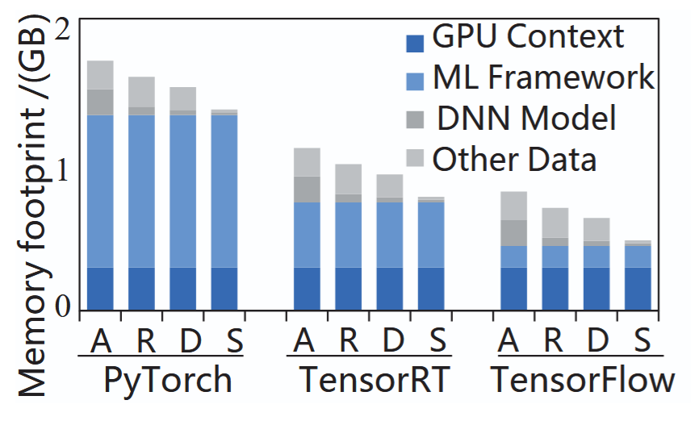
- Isolating functions with separate GPU runtimes causes over 90% data redundancy in GPU memory.
- The GPU runtime (context and ML libraries) occupies up to 95% of the memory footprint.
- Results in low deployment density and wasted expensive GPU memory.
Limitation 2: Unacceptable Cold Start
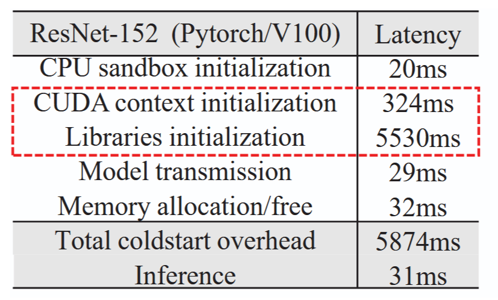
- The cold start latency of initializing a new GPU runtime is over 5 seconds.
- Unacceptable for latency-sensitive DNN inference.
- Traditional “warm-up” methods (keeping functions alive) are ineffective on GPUs because they hoard scarce memory resources.
Limitation 3: Inefficient Communication
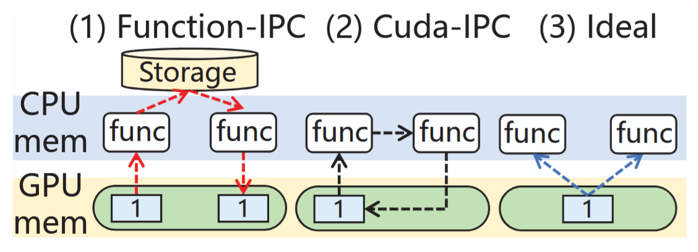
- Communication between functions on the same GPU suffers from redundant data copies.
- Data must be copied from the GPU to CPU memory, and then back to the GPU, due to the strict isolation between GPU runtimes.
The Opportunity: GPU Streams
- Idea: Use GPU streams as lightweight sandboxes instead of monolithic runtimes.
- Functions within a workflow share a single GPU runtime.
- Benefits:
- Fast startup (no context initialization)
- Small memory footprint (eliminates redundancy)
- Zero-copy data passing (shared address space)
System Design
StreamBox Architecture
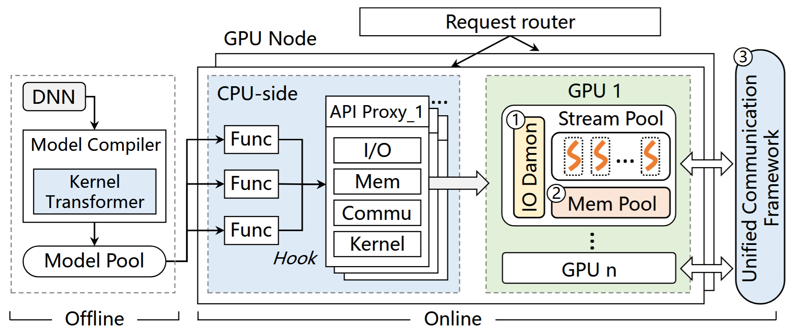
- Hooks GPU APIs from containers and forwards them to an API Proxy.
- Three core components:
- Auto-scaling Memory Pool
- Unified Communication Framework
- IO Daemon for PCIe sharing
Auto-scaling Memory Pool
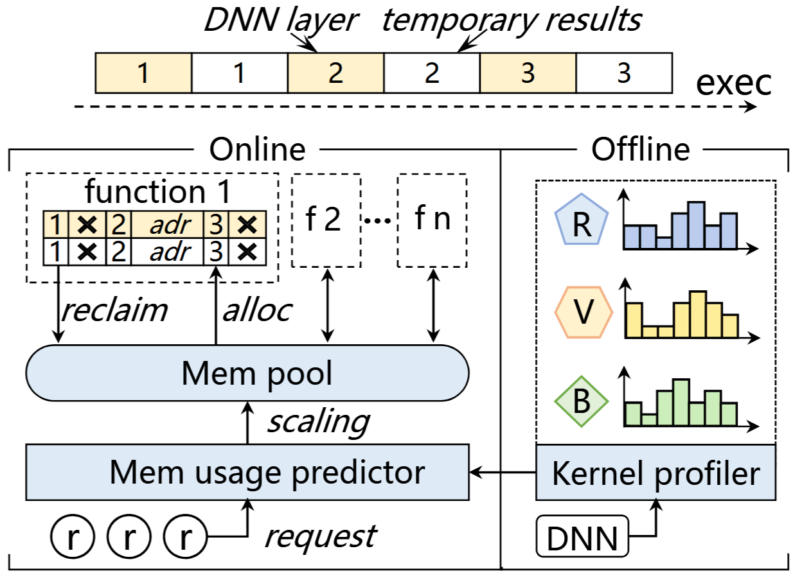
- Fine-grained Management: Allocates and recycles memory at the DNN layer granularity.
- Lazy Allocation: Physical addresses are allocated only when a variable is first accessed.
- Eager Recycling: Intermediate layer results are freed immediately when the next layer’s computation starts.
Resilient Memory Scaling
- Offline Profiling: Pre-runs models to build exact memory usage profiles for different batch sizes.
- Real-time Scaling: Periodically adjusts the memory pool size based on predicted future intervals.
- Prevents memory hoarding and aligns with the serverless pay-as-you-go billing model.
User-transparent Communication Framework
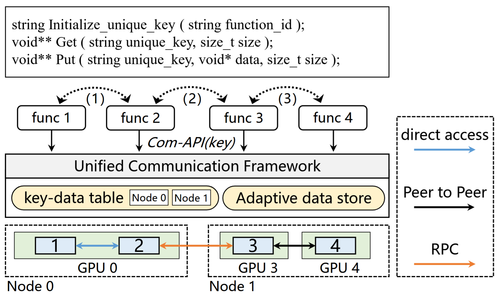
- Provides simple
PUTandGETAPIs for developers. - Adaptively switches communication methods (Intra-GPU, NVLink P2P, RPC) based on function placement.
- Elastic Communication Store: Caches intermediate data directly in idle GPU memory for zero-copy access.
Adaptive Inter-GPU Movement
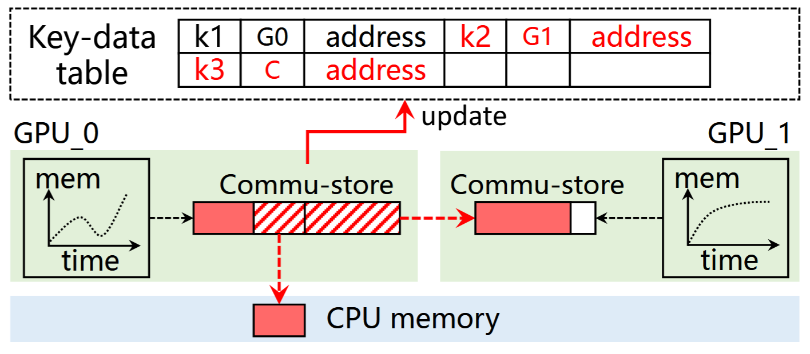
- Monitors GPU memory pressure in real-time.
- If idle memory is insufficient, StreamBox preemptively moves intermediate data to neighboring GPUs (via high-speed NVLink) or CPU memory.
- Avoids interfering with currently running inference functions.
Fine-grained PCIe Bandwidth Sharing
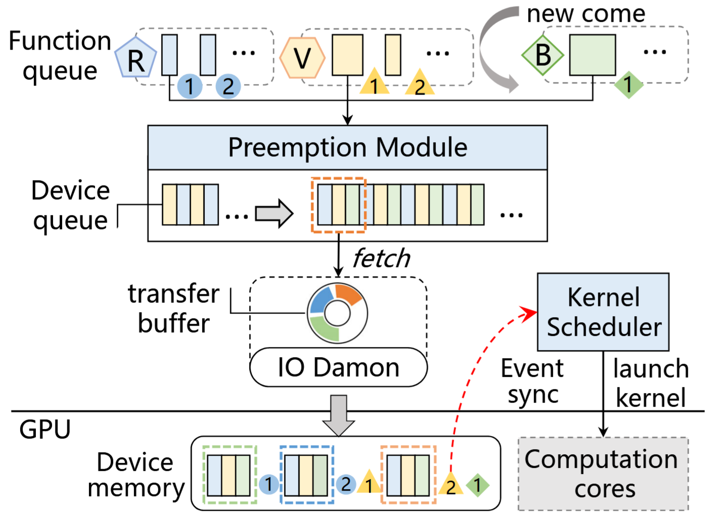
- Challenge: A single stream monopolizes the PCIe bus, blocking concurrent functions.
- Data Blocks: Partitions large data transfers into optimal 2MB blocks.
- Preemptive Batch Transfer: An I/O daemon globally schedules and interleaves these blocks across different streams.
- Rebuilt Synchronization: Asynchronously injects event synchronizations at the block level to ensure correct execution order.
Evaluation
Environment Setup
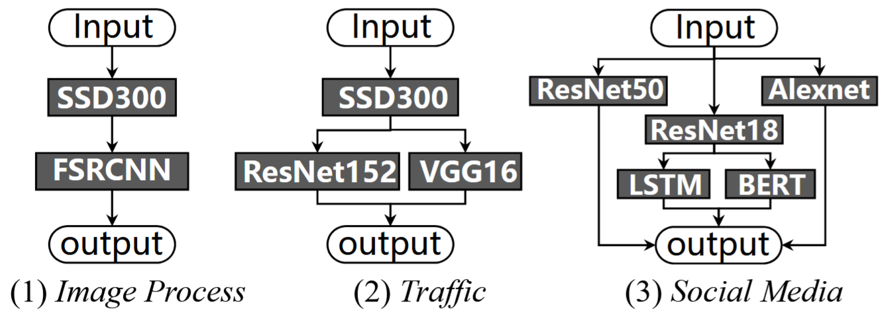
- Hardware: NVIDIA V100 GPUs (16GB), Intel Xeon CPUs.
- Workloads: Azure cloud traces (sporadic, periodic, bursty).
- Baselines:
- INFless: State-of-the-art (MPS, CUDA IPC)
- Astraea: QoS-aware system (MPS, CUDA IPC)
- Stream-only: Naive stream implementation without optimizations
Less Memory Footprint
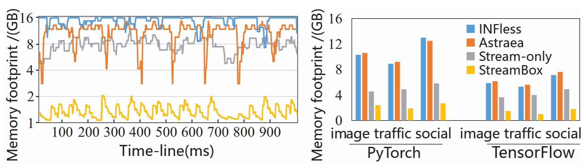
- StreamBox reduces GPU memory usage by up to 82% compared to INFless and Astraea.
- Eliminates redundant GPU runtimes, allowing much higher deployment density.
High Throughput
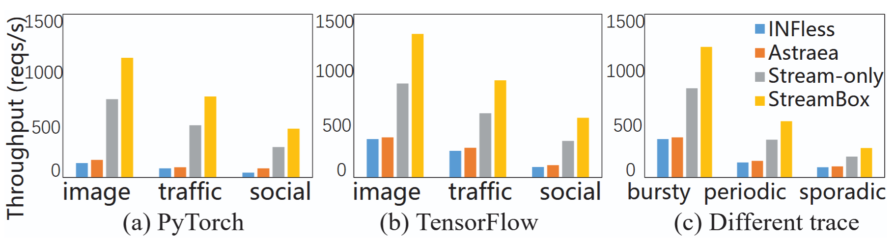
- StreamBox improves system throughput by 5.3X to 6.7X compared to state-of-the-art systems.
- Outperforms Stream-only by 1.46X due to efficient memory management and communication.
Low Latency & SLO Guarantee
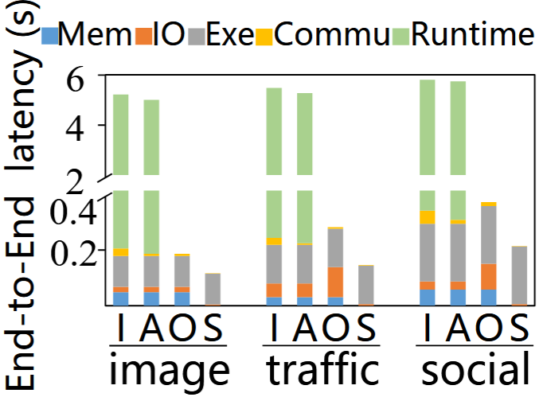
- Reduces end-to-end latency by up to 98%.
- Startup latency is reduced from ~5.8 seconds to just 5 milliseconds.
- Significantly lowers SLO violations, especially under bursty workloads.
Communication & I/O Efficiency
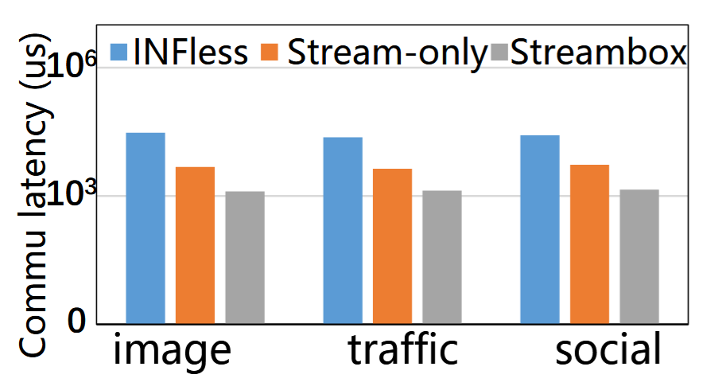
- Communication: Reduces overhead by 94% compared to INFless (Function-IPC) by keeping data in the GPU elastic store.
- I/O Scheduling: Reduces model loading latency by 91% compared to Stream-only by preventing PCIe monopolization.